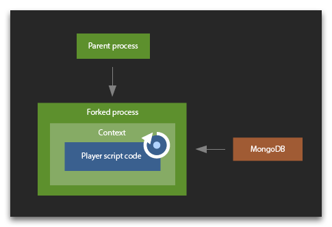

既然Screeps是一个为程序员设计的游戏, 你可能会对它服务器端怎么工作感兴趣. 对于我们来说, 我们也想把这个项目的一些高级架构透露出来.
重中之重
- 服务器端使用的软件有 Node.js 8.9.3, MongoDB 3, Redis 3.
- 我们在服务器端写了 20k 行的 JS 代码
- 运行时计算在 ovh 上的 40 个四核专用服务器上并行完成，使用 160 个 Intel Xeon CPU E3-1231 v3 处理器内核（具有相应数量的节点实例）。
- 每个 shard 的 MongoDB 数据库都在一台有 24 核心，128GRAM 的机器上运行，每秒处理 30k 的请求。
- 玩家的运行时代码是在内存中工作，不进行任何硬盘和数据库请求
架构总览
所有的游戏数据都是储存在 MongoDB 里. 每一个游戏对象都是分散的数据库文档(表). 它解释了由数据库分配的id属性对象的特定视图。
每一个游戏中的 tick 都是被 Redis 上的特殊同步代码控制的. 一个 tick 有两个阶段:
- 阶段1：解析代码
- 阶段2：执行代码
下面是一张阶段处理流程图:


每一个阶段都会创建一个任务队列。第一阶段的任务是执行所有活跃玩家的脚本，而第二阶段是处理游戏世界的房间。队列存储为一个 redis 列表，每个任务都由单独的计算机单独处理。
每个 tick 开始时会生成一个列表，其中列出了所有活跃的玩家，这些玩家被放入队列中以处理他们的游戏脚本。所有服务器从队列接收任务，请求玩家需要的数据库数据，并启动他或她的游戏脚本的运算处理，收集各种游戏对象的命令。当队列净空后，第二阶段开始。所有活动的命令都被放入队列，运行时服务器开始处理每个房间中对象的命令。（通俗点讲，第一阶段只会把所有检测到的活跃玩家的代码解析出来，看看哪些需要在第二阶段执行，第二阶段去执行这些代码）
尽管第二阶段的不同房间和第一阶段的不同玩家被分别并行处理，但并行处理的数量严格和 cpu 的数量对应。一个房间和一个玩家由一个核心同步处理，排除了各种其他条件。
两个阶段完成后，就形成了一定数量的更改数据库中游戏对象的请求。 这些要求在第二阶段结束后在bulk里得到了执行。 MongoDB 3 使用了新的储存引擎WiredTiger 根据文档级的并发性，它允许利用数据库服务器上多个并行线程的优势。 当整个数据库操作完成后, 整个系统开始执行下一个tick的操作.
数据库对象更新是唯一需要硬盘访问的操作。在数据库服务器上，磁盘刷新每分钟只执行一次，不会影响根本不使用磁盘的运行时服务器（它们上没有磁盘）。运行时服务器接收游戏对象和内存对象的就绪数据，这些数据甚至在任务启动之前就加载到RAM中。所有有用的工作都是由运行时服务器的cpu核心来完成的，这些cpu核心在tick的第一阶段即计算阶段被玩家“租用”。
服务器扩展
该系统的设计允许在两个级别上轻松扩展：
- 当数据库上的负载增加时 (例如： 玩家们在 shard 上更加活跃), 我们可以选择增加 WiredTiger 的 CPU 数或增加更多的 shard (每一个 shard 都有自己的数据库).
- 当玩家计算所产生的 cpu 总负载的增加时，我们可以添加更多的运行时服务器来执行这些计算。在它们启动后的一分钟内，它们就可以从 redis 队列接收和处理任务。
玩家脚本运行环境
Node.JS 的 vm 库在计算游戏脚本阶段执行任务时使用. 每个节点实例进程都启动一个单独的 fork，该 fork 不能访问其父进程。在启动后，fork 会立即向数据库发出一个预先请求，以获取计算所需的数据。 然后它为用户创建一个 context 并执行 vm.runInContext. context 会保存在 fork 中以备将来使用，这允许您在脚本中重复使用 global 对象和 require 缓存。 而且，编译缓存脚本代码可以加快之后的代码编译速度。

尽管 runincontext 是特定于每个玩家的代码执行超时才会被调用的，但它并不总是能够在某些工作负载类型下优雅地完成脚本执行。如果出现这种情况，则在超时时终止整个 fork 而不是 vm。这个过程中的所有玩家 context 都会消失，然后从头开始重新创建。
未来，我们计划开源所有服务器端系统的代码，让您在自己的机器上可以启动 Screeps 进行模拟并研究。